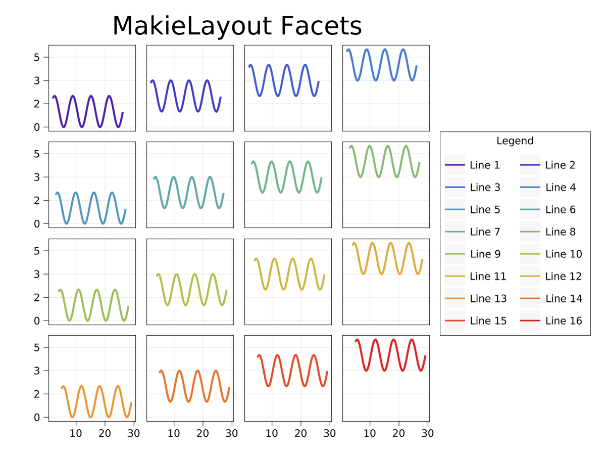

MakieLayout.jl
MakieLayout.jl brings a new 2D Axis LAxis and grid layouting with GridLayout to Makie.jl. You can build your layouts as grids that are nested within other grids. For grid layouts, you can specify many visual parameters like row and column widths, the gap sizes between the rows and columns, or paddings. 2D axes have many more parameters like titles, labels, ticks, their sizes and colors and alignments, etc. All of these parameters are Observables and the layout updates itself automatically when you change relevant ones.
As a starting point, here's one example that creates a fairly standard faceting layout like you might know from ggplot:
using MakieLayout
using Makie
# layoutscene is a convenience function that creates a Scene and a GridLayout
# that are already connected correctly and with Outside alignment
scene, layout = layoutscene(30, resolution = (1200, 1200))
ncols = 4
nrows = 4
# create a grid of LAxis objects
axes = [LAxis(scene) for i in 1:nrows, j in 1:ncols]
# and place them into the layout
layout[1:nrows, 1:ncols] = axes
# link x and y axes of all LAxis objects
linkxaxes!(axes...)
linkyaxes!(axes...)
lineplots = [lines!(axes[i, j], 1:0.1:8pi, sin.(1:0.1:8pi) .* i .+ j,
color = rand(RGBf0), linewidth = 4)
for i in 1:nrows, j in 1:ncols]
for i in 1:nrows, j in 1:ncols
# remove unnecessary decorations in some of the facets, this will have an
# effect on the layout as the freed up space will be used to make the axes
# bigger
i > 1 && (axes[i, j].titlevisible = false)
j > 1 && (axes[i, j].ylabelvisible = false)
j > 1 && (axes[i, j].yticklabelsvisible = false)
j > 1 && (axes[i, j].yticksvisible = false)
i < nrows && (axes[i, j].xticklabelsvisible = false)
i < nrows && (axes[i, j].xticksvisible = false)
i < nrows && (axes[i, j].xlabelvisible = false)
end
legend = LLegend(scene, lineplots, ["Line $i" for i in 1:length(lineplots)],
ncols = 2)
# place a legend on the side by indexing into one column after the current last
layout[:, end+1] = legend
# index into the 0th row, thereby adding a new row into the layout and place
# a text object across the first four columns as a super title
layout[0, 1:4] = LText(scene, text="MakieLayout Facets", textsize=50)